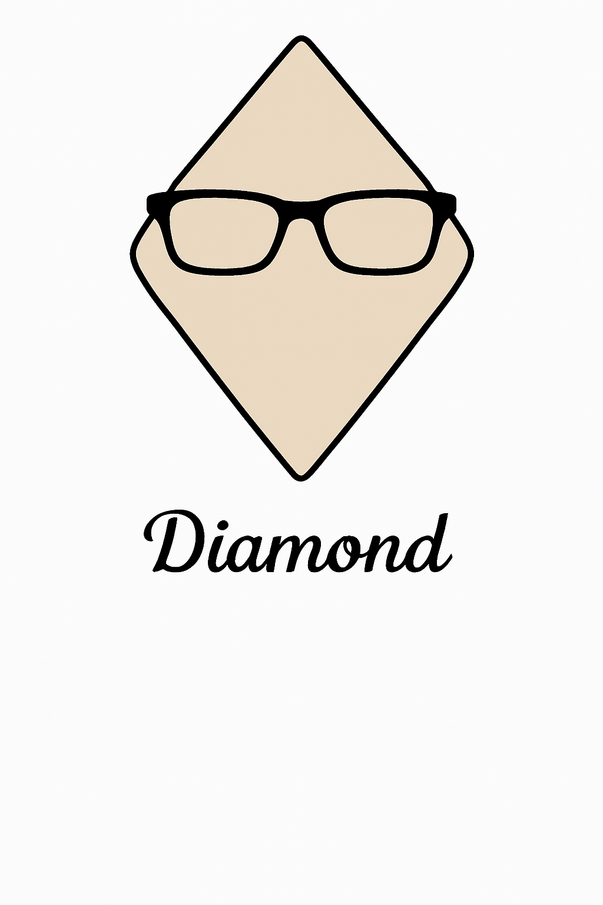

Best Hairstyles for Diamond Face Shape
Discover flattering haircuts that enhance your angular features and highlight your prominent cheekbones

Understanding Diamond Face Shape
A diamond face shape is characterized by narrow forehead and jawline with the widest part at the cheekbones. This distinctive face shape features high, prominent cheekbones and a pointed chin.
The right hairstyle can help balance the angular features of a diamond face, softening the prominent cheekbones while adding width to the forehead and jawline areas.
Characteristics of Diamond Face Shape
- Narrow forehead that is not as wide as the cheekbones
- High, prominent, and angular cheekbones (the widest part of the face)
- Narrow jawline that tapers to a pointed chin
- Face length is typically longer than width
- Dramatic angles rather than soft curves
Recommended Hairstyles for Diamond Faces


Styling Tips for Diamond Face Shape
- Add width at forehead: Hairstyles with volume or width at the forehead help balance prominent cheekbones
- Create fullness at jawline: Styles that add width at the jaw help balance the narrow chin
- Soften angles: Use soft layers or waves to soften the angular features of a diamond face
- Try side parts: Side parts create asymmetry that complements a diamond face shape
- Consider bangs: Side-swept or curtain bangs add width where needed while framing the face
- Avoid excessive height: Too much height on top can elongate the face, so keep volume balanced
Find Your Perfect Diamond Face Hairstyle
HairMe's AI technology accurately analyzes your facial proportions and provides personalized hairstyle recommendations based on your specific features.
Download App